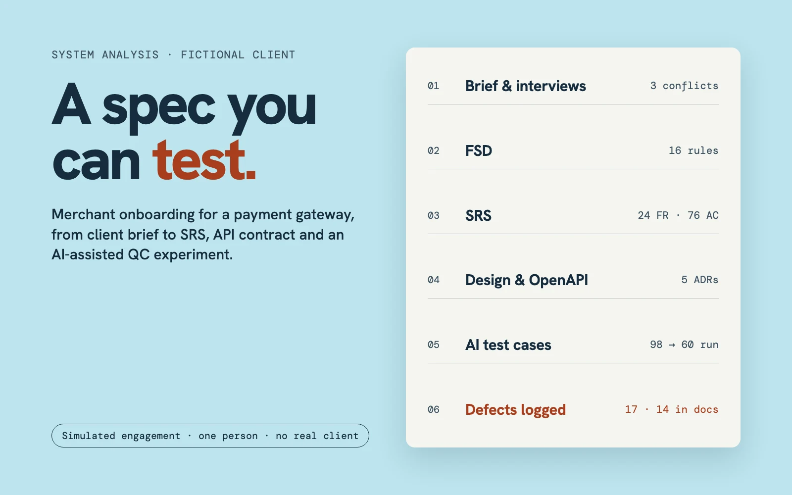

SA Pack
A spec you can test: two AI agents read different documents, and the gaps show up as failed tests.
- Role
- Solo, AI-heavy — I set the goal and scope; Claude (via Claude Code) drafted every document, made the design calls, and built the mock API and tests under my direction
- Stack
- Markdown, Mermaid, OpenAPI 3.0, Python standard library (mock API and test runner)
- Timeline
- One working session; the hour log is in the repository
- Status
- Fictional client · documents and a thin mock API · not deployed · public source on GitHub

Nine days to onboard one merchant.
The fictional client, PT Arunika Bayar, reviews merchant documents by email. A third of applications bounce for missing paperwork, nobody can say who approved what, and production API keys travel in plain email. Every figure here is invented as a baseline.
The brief: a self-service portal for merchants and a back-office for reviewers, from sign-up to an active merchant with production keys. Payments and settlement are out of scope.
From brief to contract.
Brief → interviews → FSD → SRS → architecture, ERD, sequence diagrams, OpenAPI → ADRs → traceability.
- 01
Conflicts written down, then settled
Simulated interviews with operations, compliance, engineering and a pilot merchant surface three disagreements, such as three retries versus five for webhooks. Each is resolved with a stated reason.
- 02
Rules you can test
The FSD holds 16 business rules; the SRS turns them into 24 requirements with 76 acceptance criteria and exact boundaries, such as risk tiers at Rp 500 million and Rp 5 billion.
- 03
Design with its reasons
A modular monolith, an append-only audit log and a swappable bank-verification adapter, each recorded as an ADR with the alternative it rejected.
- 04
An estimate written first
A three-point WBS estimate and a risk register were frozen before any document existed, then compared with a wall-clock hour log.
Rules that shaped the design
- Four-eyes approval: high-risk merchants need a reviewer and a different compliance officer.
- Revision limit: three revision requests at most; after that, approve or reject.
- Keys: production keys only for active merchants, the secret shown once and stored as a hash; the old key lives 24 hours after rotation.
- Webhooks: HTTPS only, private addresses refused, HMAC-signed, five retries at growing intervals.
- Change request: one simulated request (SLA escalation to a supervisor) is analysed for impact on every document, without editing the frozen baseline.
Two agents, two documents, one test run.
One Claude subagent saw only the SRS and wrote test cases. Another saw only the FSD and the OpenAPI contract and built a mock API. Neither saw the other's work, and no bug was planted.
| Measure | Result |
|---|---|
| Test cases generated from the SRS | 98 |
| Valid after review (fully grounded + valid with a stated assumption) | 97 (65 + 32) |
| Partly invented / wholly invented | 1 / 0 |
| Run against the mock API | 60: 56 pass · 3 fail · 1 ambiguous |
| Not runnable on the prototype | 38 |
| Defects logged (code / documents) | 17 (3 / 14) |
One run, one SRS, reviewed by the same model that wrote it. Read the numbers with that in mind.
The most useful finding
The SRS required a reason for every revision request, but the FSD and the API contract did not. The mock, built only from those two, accepted revisions with no reason. That is a traceability gap, caught because the agents read different documents.
A later re-check of ten risky test cases found two errors in the first review: one test had quietly adapted to the mock's behaviour and reported a pass it had not earned, and one test case exposed a data-model gap (one role per user makes the four-eyes rule meaningless). Both were corrected in the repository.
34.7 hours estimated. About 16 minutes measured.
The estimate assumed a junior analyst writing and checking each document with AI help. The hour log measured the AI session's wall clock. The gap is mostly that difference, not efficiency: the time a person needs to read and validate the package is not measured yet.
Documents and a thin mock. No client.
The repository holds every document, the raw AI test cases, the mock API, the test runner and the script that computes every number on this page. Two commands rerun the experiment with Python alone.
- Not yet: a real client, real stakeholders or a team; an independent human review; any measurement of non-functional requirements; legal or regulatory validation.
- The mock covers 9 endpoints; 10 of 24 requirements have no API contract, so 38 test cases could not run.
- Built with Claude (via Claude Code), which also made the design decisions. Read and rerun everything from the public repo: github.com/dzahyk/sa-pack-merchant-onboarding.